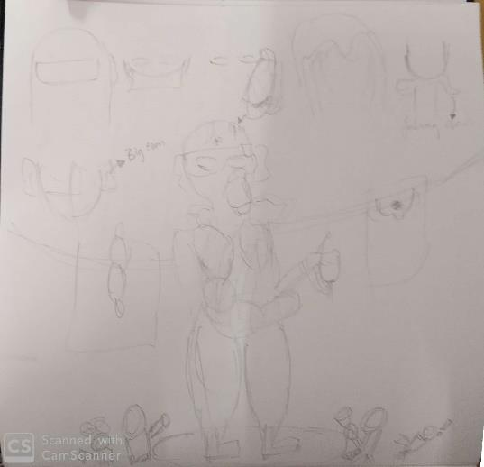
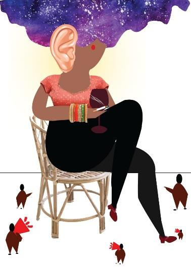
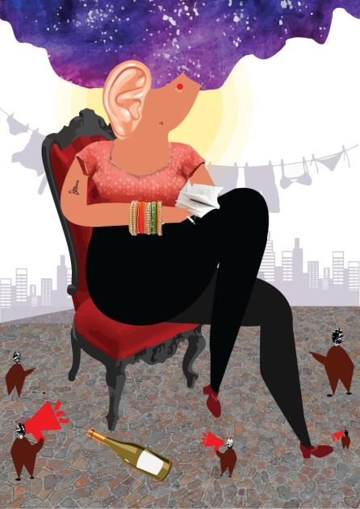

Modern Indian women
An illustration of modern Indian women - to appreciate and define a 'woman of today' in the present socio-cultural contexts, especially that of Indian.
Overview
As a part of the illustration workshop, the task was to design a poster with an insight to interpret the complexity in defining a 'woman of today' in the present socio-cultural contexts, especially that of Indian.

The Problem
The task was to interpret 'Modern Indian women' in socio-cultural contexts using any suitable technique for the illustration.
Challenge
The challenge was to incorporate the critical stand on today's modern Indian women in the illustration within the given time of 2 days.
Goal
The goal was to design a visual poster that communicates to the audience, my perspective on modern Indian women without any ambiguity.
Discovery and research
It was essential to read articles on today's modern women, and then with the insights, I was able to take a critical stand and convey my perspective.
My interpretation of a Modern woman is someone who overcomes the taboos. Despite listening to people around her, she takes the negativity and converts to positivity and doesn't give up on her aspirations.
I have jotted down the following distinctive characters which I wanted to show in the illustration.
Ideation
In the ideation phase, I sketched options to achieve the discovered points and decided on making a collage work.


Development
In this phase, I reworked on the context of background, the colors, and visual elements such as the name on the book and the tattoo on the arm and other objects, icons, symbols.

Outcome
The key learning of the project is the composition of the illustration and the vital role of the aspects in the illustration.
There is a need for improvement in the technique of collage work to enchance the illustration.